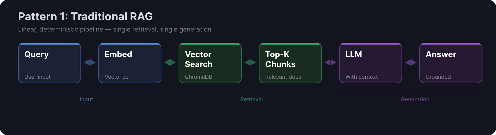
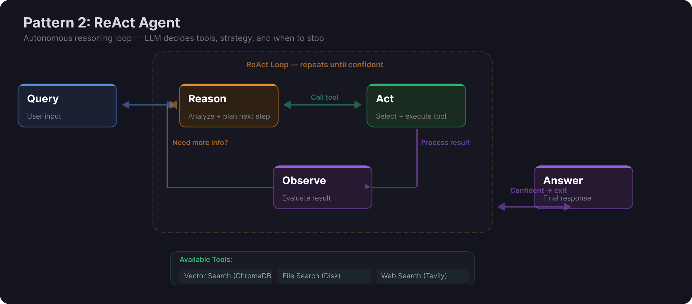
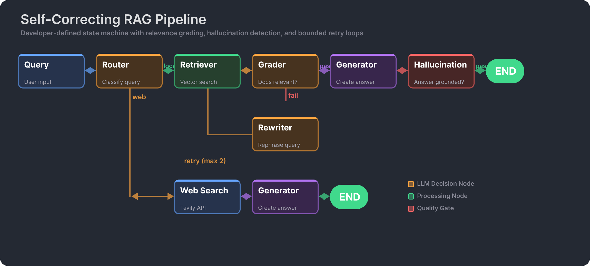

Introduction
Retrieval-Augmented Generation has become the dominant pattern for building LLM applications that need to answer questions over private data. The core idea is simple: instead of relying solely on the knowledge baked into a model's weights, you retrieve relevant documents at query time and feed them as context alongside the user's question. The LLM then generates an answer grounded in your actual data rather than its training corpus.
But RAG has evolved rapidly. What started as a straightforward "retrieve then generate" pipeline has branched into sophisticated architectures involving autonomous agents, state machines, and multi-step reasoning loops. Over the past year, I have built three distinct RAG systems, each representing a different point on this spectrum. This article walks through those three patterns, explaining the architecture, trade-offs, and practical considerations that drove each design decision.
The patterns are not strictly better or worse than one another. Each fits different requirements. Understanding where each excels -- and where it breaks down -- is the key to choosing the right one for your use case.
Pattern 1: Traditional RAG
The traditional RAG pipeline is the foundation everything else builds on. The flow is linear and deterministic: take the user's query, convert it to an embedding vector, search a vector database for the most similar document chunks, pass those chunks as context to an LLM, and return the generated answer. There are no loops, no branching decisions, and no autonomous reasoning. The developer controls the entire path.

I implemented this pattern in VaultRAG, a dual-mode system that runs either against AWS Bedrock (cloud mode) or entirely locally using Ollama (private mode). The project handles PDF, DOCX, TXT, and image files, extracting text through a unified pipeline before chunking and embedding into ChromaDB.
Building VaultRAG surfaced several practical decisions that documentation rarely covers. For PDF processing, I initially used pdf2image with Poppler for OCR-based extraction, but Poppler's system-level dependency made deployment painful across different environments. Switching to PyMuPDF eliminated that dependency entirely -- it handles PDF-to-image conversion natively in Python, and the resulting images feed directly into Bedrock's vision models for OCR. On the model side, I chose BedrockConverse over the raw Bedrock API because the Converse API provides a unified interface across model families (Claude, Titan, Llama), which means swapping models does not require rewriting the integration layer.
The embedding model choice matters more than most tutorials suggest. In public mode, I use Amazon Titan Embeddings through Bedrock. In private mode, I use nomic-embed-text running locally via Ollama. The dimensionality and similarity characteristics differ, so the ChromaDB collections are kept separate per mode. This is a detail that trips up many RAG implementations: mixing embeddings from different models in the same vector space produces meaningless similarity scores.
Strengths
- Simplicity. The entire pipeline is a straight line. You can trace any answer back through the retrieved chunks to the original document. Debugging is straightforward: if the answer is wrong, check if the right chunks were retrieved. If they were, the prompt needs work. If they were not, the chunking or embedding strategy needs adjustment.
- Performance. A single embedding call, a single vector search, and a single LLM call. Latency is predictable and low.
- Transparency. You can log every retrieved chunk and show it to the user as a citation. There are no hidden decisions or opaque reasoning steps.
Weaknesses
- No self-correction. If the initial retrieval misses the relevant documents, the system has no way to try again with a reformulated query. It generates the best answer it can from whatever was retrieved, even if that context is insufficient or irrelevant.
- Single retrieval attempt. Complex questions that span multiple topics or require synthesizing information from different sections of a corpus often fail because a single embedding cannot capture all the nuances of the query.
- No external sources. The system can only answer from its indexed corpus. If the answer is not in the documents, it either hallucinates or says it does not know -- but it cannot go find the information elsewhere.
When to Use
Traditional RAG is the right choice when you have a well-defined document corpus and users are asking straightforward questions against it. Internal knowledge bases, documentation search, customer support over product manuals -- these are all excellent fits. If latency matters (sub-second responses), if you need full auditability of the retrieval path, or if you are building an MVP to validate whether RAG solves your problem at all, start here.
Pattern 2: ReAct Agent
The ReAct (Reason-Act-Observe) pattern hands control to the LLM itself. Instead of following a fixed pipeline, the agent receives a query and autonomously decides what to do: which tool to call, what arguments to pass, whether to search again with different terms, or whether it has enough information to answer. The LLM reasons about its strategy, executes an action, observes the result, and then decides the next step. This loop continues until the agent determines it can produce a final answer.

I built this pattern using LlamaIndex's ReAct agent framework, with three tools available: a vector search tool backed by ChromaDB, a file search tool for direct file access, and a web search tool using Tavily's API. The agent decides which tools to invoke and in what order. A question like "What does the README say about installation?" might trigger the file search tool directly, while "How does this project compare to LangChain's approach?" might involve both vector search (for project details) and web search (for LangChain documentation).
The implementation also exposes the vector database through an MCP (Model Context Protocol) server, which means other AI tools and agents can connect to the same knowledge base without reimplementing the retrieval logic. MCP provides a standardized interface -- think of it as a REST API but designed specifically for LLM-tool communication. This interoperability is increasingly important as AI systems move from isolated applications to interconnected ecosystems.
One of the more interesting architectural decisions was how to handle the agent's tendency to over-retrieve. A ReAct agent, left unconstrained, will sometimes call every available tool "just to be thorough," even when the first retrieval already returned a perfect answer. I addressed this by carefully engineering the tool descriptions and system prompt to emphasize efficiency: only search when the current context is insufficient, prefer the most specific tool for the question, and stop when confident.
Strengths
- Flexibility. The agent adapts its strategy to the query. Simple questions get simple, fast answers. Complex questions trigger multi-step research across multiple sources.
- Multi-source reasoning. Unlike traditional RAG, the agent can combine information from your documents, raw files, and the open web in a single response.
- Handles ambiguity. When a query is vague, the agent can explore multiple angles rather than committing to a single retrieval strategy upfront.
Weaknesses
- Unpredictable execution. You cannot guarantee how many tool calls the agent will make, which tools it will choose, or how long a query will take. The same question asked twice might follow different paths.
- Higher latency. Each reasoning step involves an LLM call, and the agent may make three to five tool calls before answering. Total latency can be five to ten times higher than traditional RAG.
- Debugging difficulty. When the agent produces a wrong answer, tracing the reasoning chain to identify where it went astray is significantly harder than checking retrieved chunks in a traditional pipeline.
- Poor tool selection. LLMs occasionally make suboptimal tool choices -- searching the web when the answer is in the local corpus, or vice versa. This wastes time and can introduce irrelevant information.
When to Use
ReAct agents shine when queries are complex, open-ended, or require information from multiple sources. Research assistants, exploratory data analysis, and any scenario where you cannot predict in advance which data source will have the answer are all good candidates. Use this pattern when flexibility matters more than predictability, and when users can tolerate variable response times.
Pattern 3: Orchestrated Graph
The orchestrated graph pattern takes a fundamentally different approach from the ReAct agent. Instead of letting the LLM decide the workflow, the developer defines it explicitly as a state machine. The LLM is called at specific nodes to make focused decisions -- route this query, grade this document, check for hallucinations -- but the overall flow is deterministic and controlled. You get the intelligence of LLM-based decisions combined with the predictability of developer-defined logic.

I implemented this using LangGraph, which provides a clean abstraction for building stateful, multi-step workflows as directed graphs. Each node in the graph is a function that receives the current state, performs its work (often involving an LLM call), and returns an updated state. Edges between nodes can be conditional, allowing the graph to branch based on LLM decisions or programmatic logic.
The flow works as follows. A router node examines the incoming query and decides whether to search the local vector store or the web. If it routes to the vector store, a retriever node fetches relevant chunks from ChromaDB. A grader node then evaluates each retrieved document for relevance to the query -- this is a focused LLM call with a binary output (relevant or not relevant). If enough documents pass grading, the flow moves to a generator node that produces the answer. But the answer does not go directly to the user: a hallucination checker evaluates whether the generated response is actually grounded in the retrieved documents. If the grader rejects too many documents, the query flows to a rewriter node that reformulates it, and the retrieval-grading loop repeats.
This architecture embeds quality controls directly into the pipeline. The grader prevents irrelevant context from reaching the generator. The hallucination checker catches answers that sound plausible but are not supported by the source material. The rewriter provides the self-correction mechanism that traditional RAG lacks. And because the developer defines all these steps, you know exactly where to look when something goes wrong.
A practical detail worth noting: the grader and hallucination checker use smaller, faster prompts with constrained outputs (just "yes" or "no" with a brief justification). They do not need the full reasoning capability of the generation step. This keeps the per-node latency manageable even though the total number of LLM calls is higher than in traditional RAG.
Strengths
- Predictable flow. Every query follows a path you defined. You can draw the graph on a whiteboard and trace any query through it. There are no surprise tool calls or unexpected reasoning tangents.
- Built-in quality checks. Relevance grading, hallucination detection, and query rewriting are structural components of the pipeline, not afterthoughts.
- Self-correction. When initial retrieval fails, the graph automatically reformulates the query and tries again. This happens within defined bounds -- you control the maximum number of retries -- so it cannot loop forever.
- Developer control. You decide the routing logic, the grading criteria, the retry limits, and the fallback strategies. The LLM makes decisions at each node, but within guardrails you define.
Weaknesses
- Implementation complexity. Building a well-designed state graph takes significantly more effort than a traditional RAG pipeline. Each node needs its own prompt, its own error handling, and its own testing.
- Less flexible. The graph handles the patterns you designed for. A query that does not fit any anticipated path may get forced through an inappropriate branch. Adding new capabilities means modifying the graph structure.
- Multiple LLM calls. A single query may trigger four to six LLM calls (routing, grading each document, generating, hallucination checking). Cost and latency are higher than traditional RAG, though more predictable than a ReAct agent.
When to Use
The orchestrated graph is the right choice for production systems where answer quality and reliability matter more than flexibility. Regulated industries (healthcare, finance, legal) that need auditable reasoning paths benefit enormously from the structured flow. Any application where a wrong answer carries significant cost -- customer-facing products, decision-support tools, compliance systems -- should consider this pattern. The upfront investment in building the graph pays off in operational predictability.
Choosing the Right Pattern
The three patterns form a spectrum from simplicity to sophistication, but sophistication is not always better. The right choice depends on your specific requirements.
Start with Traditional RAG when you are validating an idea, working with a focused document corpus, or need the fastest possible responses. If users are asking direct questions and the answers exist in your documents, a well-tuned traditional pipeline will outperform more complex architectures simply because it has fewer points of failure. Most RAG applications should start here and only move to more complex patterns when specific limitations surface.
Move to a ReAct Agent when your users ask questions that cannot be answered from a single source. If queries regularly require combining information from local documents with web searches, or if the nature of the questions is so varied that you cannot anticipate the right retrieval strategy in advance, an agent's ability to dynamically select tools becomes valuable. Accept the trade-off: you gain flexibility but lose predictability.
Choose an Orchestrated Graph when you need production-grade reliability with built-in quality guarantees. The graph pattern lets you encode your domain expertise -- what constitutes a relevant document, what counts as a hallucination, when to fall back to web search -- directly into the pipeline. You trade flexibility for control, and in most production scenarios, that is the right trade.
One insight from building all three: most production systems benefit from the orchestrated approach. The ReAct agent is intellectually elegant and impressive in demos, but its unpredictability makes it difficult to operate at scale. When your on-call engineer gets paged at 2 AM because answer quality dropped, they need to be able to trace the exact path a query took and identify which step failed. The orchestrated graph gives you that. The ReAct agent does not.
That said, hybrid approaches are increasingly common. You might use an orchestrated graph as the primary pipeline but delegate specific complex sub-tasks to a ReAct agent within a single node. The patterns are composable, not mutually exclusive.
What's Next
RAG patterns continue to evolve in several directions. Multi-agent systems are the natural extension of the single-agent ReAct pattern: multiple specialized agents collaborate on a query, each with its own tools and expertise. One agent handles retrieval, another handles analysis, a third handles synthesis. Frameworks like LangGraph and CrewAI are making this increasingly practical, though coordination complexity grows quickly.
Tool use is becoming more standardized. The Model Context Protocol (MCP) is emerging as a common interface for connecting LLMs to external tools and data sources. Instead of every application implementing its own tool integration, MCP provides a shared protocol -- similar to how REST standardized web APIs. I have already started exposing vector databases through MCP servers, and the interoperability benefits are immediately apparent: any MCP-compatible client can query the same knowledge base without custom integration code.
Evaluation frameworks remain the biggest gap in the RAG ecosystem. We have good tools for building RAG systems but limited tools for systematically measuring their quality. Metrics like faithfulness, relevance, and answer correctness need to be evaluated continuously, not just at development time. Projects like RAGAS and DeepEval are making progress here, but evaluation is still the weakest link in most RAG deployments.
The fundamental trajectory is clear: RAG is moving from static pipelines to dynamic, self-improving systems that combine retrieval, reasoning, and tool use in increasingly sophisticated ways. The patterns described in this article are waypoints on that journey, not endpoints. Understanding the trade-offs at each stage -- simplicity versus flexibility, predictability versus autonomy, speed versus quality -- is what separates production-ready systems from impressive prototypes.